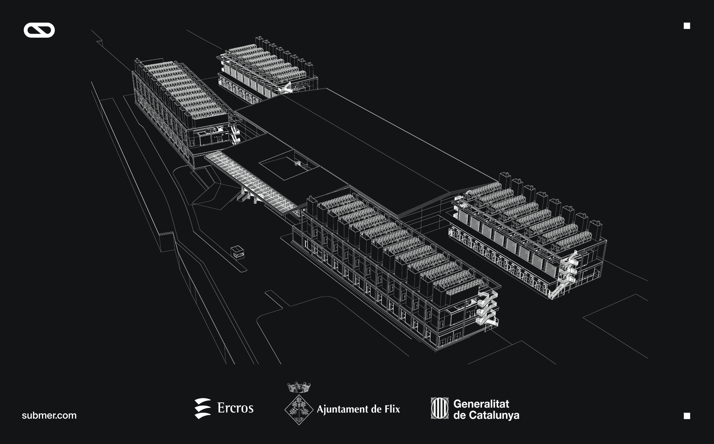

Submer: 1 Md€ pour un data center IA souverain en Catalogne
L'annonce officielle Submer du 11 juillet 2026 ajoute une brique très concrète à l'IA souveraine européenne: plus de 1 milliard d'euros pour transformer l'ancien site Ercros de Flix, en Catalogne, en centre de données IA durable, développé et opéré par Rubix Data Centers.

1. Ce qui est annoncé
Submer Group prévoit d'investir plus de 1 milliard d'euros dans un centre de données IA de nouvelle génération à Flix. Le projet sera porté par Rubix Data Centers, filiale de Submer, et doit fournir les éléments physiques devenus critiques pour l'IA: puissance électrique, terrain, refroidissement, bâtiments et exploitation à grande échelle. La conception met en avant un refroidissement liquide économe en énergie, sans consommation d'eau en opération normale.
2. Pourquoi c'est un signal d'IA souveraine
La souveraineté IA ne dépend pas uniquement des modèles ou de la résidence des données. Elle dépend aussi de la capacité européenne à disposer de sites industriels capables d'héberger les charges de calcul, les clouds IA et les plateformes d'inférence. Le choix de Flix relie donc réindustrialisation locale, contrôle d'infrastructure et capacité de calcul pour les besoins européens.
3. Ce que les organisations doivent vérifier
Pour les entreprises belges et françaises, ce type d'annonce doit déclencher une lecture plus opérationnelle des stratégies IA: où seront exécutés les workloads critiques, qui opère l'infrastructure, quels engagements de service couvrent la disponibilité, quelle traçabilité existe sur les données, et comment le coût énergétique est maîtrisé. Un projet IA souverain crédible doit documenter ces dépendances avant le passage en production.
Cartographier les workloads IA sensibles et les rattacher à des critères d'infrastructure: localisation, opérateur, refroidissement, énergie, réversibilité et supervision.
Structurer le cadrage